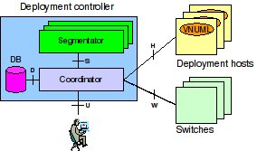
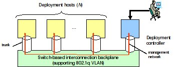

From VNUML-WIKI
EDIV User Manual
Authors: Francisco José Martín Moreno (fjmartin at dit.upm.es) Miguel Ferrer Cámara (mferrer at dit.upm.es) Fermín Galán Márquez (galan at dit.upm.es) version 1.0, Oct 14th, 2008
Contents |
[edit] EDIV Philosophy
This section introduces some basic concepts which are important to know in order to use the EDIV tool to design, build and run tests over distributed virtualization network scenarios.
EDIV is an evolution of VNUML to allow the management of virtualization scenarios deployed on multi-host distributed infrastructure. One of the main design requirements is transparency, so users accustomed to use basic VNUML (i.e. mono-host) will be able to work with EDIV in minutes.
EDIV is executed in a GNU/Linux cluster. The tool requires root privileges to run, in order to configure network interfaces and other management operations.
The EDIV cluster is composed of two different nodes:
- The controller, in which EDIV software package is installed. It manages the deployment and shutdowns of distributed network simulations. The controller also provides functions to monitor the status of the running simulations.
- The cluster hosts: these are the physical hosts where the scenario virtual machines are deployed. Each host cluster can run one or several virtual machines (it depends on the segmentation algorithm)
The cluster has to be properly configured before running any scenario with EDIV (e.g., have VNUML tool installed).
The EDIV architecture is shown in the following image:

The EDIV architecture from a networking point of view is shown in the following image:

NOTE: it is also possible that one of the cluster hosts plays the controller role (i.e., the controller is more a functional rather than physical entity).
As a pre use requisite, a cluster must be configured:
- First of all, the user must design a host cluster. For that, several aspects have to be considered in advance: the number of physical machines, the topology (network interfaces in each machine and how they are connected)...
A cluster configuration file must be written. The default location for this file is/etc/ediv/cluster.conf, although any other file can be used through command line arguments.
Once the user has configured the EDIV cluster, the typical working cycle can take place, running ediv_ctl.pl against a VNUML simulation, and consists in the following steps (although two of them are optional):
- Build scenario (ediv_ctl -t mode). The controller splits the VNUML scenario into smaller ones, according to different algorithms the user can choose. Then it takes the necessary steps to configure networking between the host cluster. Then it runs the splitted simulations in their corresponding hosts using VNUML.
- Execute commands (ediv_ctl -x mode). This step is optional. Once the scenario has been built using -t mode, you can run command sequences on it. If the scenario has command sequences, the controller sends the configuration files to every host of the cluster, and then uses VNUML -x mode in each host to configure the splitted simulations.
- Manage mode (several EDIV tools). This step is optional. Once one or several scenarios are running, some EDIV scripts can be used to monitor the cluster status and make queries about the simulations.
- Release Scenario (ediv_ctl -P or -d modes). In this final step, all the splitted simulation are stopped and it's components created using -t mode (splitted VNUML simulations, vlans, ssh_tunnels and temporary files) are cleanly released.
Concurrent simulations can be executed isolated or even sharing connections among them and the host.
[edit] Cluster Configuration
[edit] Cluster Requirements
The cluster has two parts: the controller and the hosts. All the elements need to IP connectivity among them in order to work (tipically an Ethernet switch or switches interconnecting them all).
The controller doesn't have additional requirements.
The hosts must have two network interfaces:
- The first one can be it's main network interface, and it's going to be used to send commands and manage the simulations.
- The second one is going to be used to communicate running scenario among the hosts of the cluster. This network formed by all the secondary interfaces of all the hosts of the cluster must be a unique LAN. If this LAN is physically implemented by a VLAN capable switch, the switch must be configured to allow a VLAN range that needs to be specified in the EDIV cluster configuration file.
NOTE: Although only a single network interface can be used for both tasks, it's highly recommended to use two different ones. The reason for that is that creating or destroying subinterfaces some times renders the interface unusable, loosing connectivity with the rest of the hosts of the cluster.
NOTE: if the controller is also a host (runs part of the distributed simulation), the requirements of the host apply to the controller.
[edit] Configuration File
This file is located by default in /etc/ediv/cluster.conf and has the following sections:
- [db], this section describes how to connect to the SQL database. Composed of the following parameters:
- type, this parameter specifies the type of SQL database that is going to be used. Although EDIV uses standard SQL queries, it has only been tested with MySQL. Examples:
type = Pg # PostgreSQL DB type
type = mysql # MySQL DB type
- name, this is the name of the DB you want to use.
- host, this is the name of the host that runs the DB.
- port, this is the number of the port used by the SQL DB.
- user, this is the username to use to connect to the SQL DB.
- pass, this is the password to use to connect to the SQL DB.
- type, this parameter specifies the type of SQL database that is going to be used. Although EDIV uses standard SQL queries, it has only been tested with MySQL. Examples:
- [vlan], this section specifies the vlan range that EDIV can use.
- first, this specifies the first vlan number EDIV can use.
- last, this specifies the last vlan number EDIV can use.
- [cluster], this section specifies the names of the hosts (or IP addresses) of the cluster, and the default segmentation mode.
- host, one parameter for each host of the cluster, specifying a different host name/IP.
- default_segmentation, specifies the default segmentation mode EDIV will use if this parameter is not specified in the command line invocation of ediv_ctl.pl
- mgmt_network, this argument specifies the management network EDIV will use to communicate with the virtual machines of each simulation.
- mgmt_network_mask, this argument specifies the management network mask EDIV will use to communicate with the virtual machines of each simulation.
- [<hostname or IP>], several sections, one per host in the cluster, containing the properties of the corresponding host.
- mem, integer, number of RAM megabytes of this host.
- cpu, integer, percentage speed relative to the fastest physical host of the cluster.
- max_vhost, integer, maximum virtual machines allowed to be virtualized in the physical host. 0 = unlimited.
- ifname, string, name of the external network interface used by the simulation.
The syntax is illustrated in the following example:
NOTE: The lines starting with a # character are comments and are ignored when parsing the configuration file.
# Distributed VNUML Cluster Configuration File # Default location: /etc/ediv/cluster.conf # Sections: [db], [vlan], [cluster], multiple [<hostname>] properties # DB connection information [db] type = mysql name = ediv host = localhost port = 3306 user = root pass = whatever # Available VLAN number # Define a list of Vlan numbers that can be used to virtualize and # manage the virtual hosts. # Syntax example: # [vlan] # first = 100 # last = 120 [vlan] first = 100 last = 199 # Physical host list: # Defines each host name or ip in a new line. Mixing IPs and names # is allowed. # Defines the default segmentation mode. # Syntax example: # [cluster] # host = my_host_name_1.mydomain.com # host = my_host_name_2.mydomain.com # host = 127.0.0.1 # default_segmentation = RoundRobin [cluster] host = zermat host = kofy #host = cuco default_segmentation = RoundRobin #default_segmentation = WeightedRoundRobin mgmt_network = 10.250.0.0 mgmt_network_mask = 16 # Physical Host Properties # A PER HOST properties set should be defined using the same name # or IP defined in the [cluster] section. # Parameters per host: # mem: integer, number of RAM megabytes available for the simulation # cpu: integer, percentage speed relative to the fastest physical # host of the cluster # max_vhosts: integer, maximum virtual machines allowed to be # virtualized in the physical host. 0 = unlimited. # ifname: string, name of the default network interface used # Syntax example: # [127.0.0.1] # mem = 2048 # cpu = 100 # max_vhost = 0 # ifname = eth0 # [my_host_name_1.mydomain.com] # mem = 1024 # cpu = 85 # max_vhost = 8 # ifname = eth0 [zermat] mem = 2048 cpu = 100 max_vhost = 0 ifname = eth1 [kofy] mem = 1024 cpu = 85 max_vhost = 0 ifname = eth1 [cuco] mem = 2048 cpu = 85 max_vhost = 0 ifname = eth1 # End of file
IMPORTANT NOTE: the ifname attribute specified in each host section must be the secondary interface mentioned in the "Cluster Requirementes" section.
[edit] EDIV Controller Usage
This section describes in detail ediv_ctl.pl usage options. Basically, the EDIV controller is a Perl script that is called from a shell command-line. In fact, the installation procedure place the script file in the right directory (/usr/local/bin/ediv_ctl.pl if you installed from source .tgz or /usr/bin/ediv_ctl.pl, if you installed from .deb package -recommended).
Depending on the chosen mode, the arguments are different in each case:
[edit] Building Scenario
To build a distributed scenario use switch -t. If the scenario (or another scenario with the same simulation_name) is already running, the parser exits immediately.
Sintax:
ediv_ctl.pl -t <-s scenario_file> [-a segmentation_mode] [-r restriction_file] [-c cluster_configuration_file]
During the scenario start-up process, several virtual interfaces, bridges and uml_switch processes are created in the different hosts for the management of virtual machines (virtual machines are basically managed by sending commands through a ssh session from the host). These interfaces, bridges and uml_switches exist while the scenario is running, and are destroyed when the scenario is released (-P or -d).
The only mandatory argument is the scenario file (the name of the XML file that contains a VNUML scenario specification). The following optional arguments can be used when invoking vnumlparser using mode -t:
- Segmentation mode. If is not specified, the default option (default_segmentation in [cluster] in the cluster configuration file, typically
/etc/ediv/cluster.conf) will be used. The available segmentation modes are the ones located in the/usr/share/EDIV/algorithmsor/usr/local/share/EDIV/algorithmsfolders (see the Segmentation Algorithm API). The basic EDIV package includes two algorithms:- 'RoundRobin': This mode assigns the first virtual machine of the simulation to the first available host of the cluster. Then it takes the next virtual machine and assigns it to the next available cluster host and so on until all the virtual machines are assigned to a host of the cluster.
- 'WeightedRoundRobin': This mode is similar to the previous one but considering the relative CPU load among the hosts of the cluster. Less virtual machines are assigned to the most loaded hosts of the cluster.
- Restriction file: This argument is the name of a XML file that contains some explicit assignment rules. To write a restriction file follow the directions of the corresponding section of the language reference.
- Cluster configuration file: This argument specifies the cluster configuration file that is going to be used to deploy the simulation. If not specified the default
/etc/ediv/cluster.confwill be used.
[edit] Execute Commands
To execute commands over an already running scenario use switch -x. You must specify the commands sequence that you want to execute using the following notation:
ediv_ctl.pl <-x cmd_seq> <-s scenario_file>
Where 'cmd_seq' is the command sequence to be executed (matching with seq attribute in <exec> tag) and 'scenario_file' is the VNUML specification of the scenario.
NOTE: if the VNUML scenario needs configuration files (to be used in the execution mode -x), they must be in the same folder as the XML scenario file.
[edit] Releasing a Scenario
To release a scenario use switch -P or switch -d.
Sintax:
ediv_ctl.pl -P <-s simulation file>
or
ediv_ctl.pl -d <-s simulation file>
This mode terminates the scenario life cycle, by halting all virtual machines and destroying virtual interfaces and bridges created during the start-up mode (-t switch). The effect (and cautions!) are the same that with VNUML -P and -d modes (see "VNUML user manual").
While purging a scenario the following actions are performed:
- Terminates tunnels to access the virtual machines.
- Launch vnumlparser.pl in every host of the cluster to stop splitted simulations.
- Delete vlan interfaces created to communicate virtual machines among cluster.
- Remove (rm) all files related with the distributed simulation (located in
/tmp).
[edit] EDIV Scripts Usage (Manage Mode)
Once one or several distributed scenarios are running using EDIV, the following scripts are available to obtain information about the cluster and the scenario status.
[edit] ediv_segmentation_info.pl
This script shows the assignment that would be performed if EDIV was launched with certain parameters at that time (i.e: weighted round robin algorithm assignment changes in time depending on cpu load).
Syntax:
ediv_segmentation_info.pl <scenario_file> [segmentation_mode] [restriction_file]
- Scenario file. This argument is mandatory and specifies the scenario you want to simulate.
- Segmentation mode. This argument is optional and specifies the segmentation algorithm to be used. If not specified in the Segmentation Mode specified in the default Cluster Configuration File is used.
- Restriction file. This argument is optional although if segmentation mode is specified, this argument becomes mandatory (specify only one argument or three). This argument is the name of a XML file that contains some explicit assignment rules.
[edit] ediv_monitor.pl
This script shows the status of the cluster hosts.
Syntax:
ediv_monitor.pl <refresh_rate> [cluster_host]
- Refresh rate. This argument is mandatory and it's a number that indicates the information refresh rate in seconds. If this argument is '0', the information will be shown once and the script will terminate.
- Cluster host. This argument is optional. If specified, only the information about that host will be shown, otherwise, information about all the hosts of the cluster will be shown.
[edit] ediv_query_status.pl
This script shows information about the running scenarios.
Syntax:
ediv_query_status.pl [scenario_name]
- Scenario name. This argument is optional. If not specified the script shows the running scenarios in each host of the cluster. If the scenario name is specified, the script shows the virtual machines belonging to that scenario, and in which host are running (each of them).
[edit] ediv_query_vlan.pl
This script shows the VLANs created to communicate the hosts of the cluster.
Sintax:
ediv_query_vlan.pl [scenario_name]
- Scenario name. This argument is optional. If not specified the script shows the created VLANs and the scenarios that uses them. If the scenario name is specified, the script shows the VLANs used by the scenario and the hosts of the cluster using those VLANs.
[edit] ediv_locate_vm.pl
This script shows where the virtual machines are located in the cluster.
Sintax:
ediv_locate_vm.pl [virtual_machine_name]
- Virtual machine name. This argument is optional. If not specified the script shows all the virtual machines running and in which host of the cluster are located. Otherwise, only the information about that virtual machine is shown.
[edit] ediv_console.pl
This script has two working modes.
[edit] Info Mode
This mode shows the available SSH tunnel ports to access virtual machines.
Sintax:
ediv_console.pl info [scenario_name]
or
ediv_console.pl info <scenario_name> <virtual_machine_name>
- Simulation name. This argument is optional. If specified the script shows the available SSH tunnel ports corresponding to the scenario. Otherwise the ports corresponding to all the running scenarios are shown.
- Virtual machine name. This argument is optional. If specified, 'scenario_name' argument is mandatory. When both are specified the script shows the SSH port that can be used to access that virtual machine.
[edit] Console mode
This mode uses a SSH tunnel to access a virtual machine running in some scenario.
Syntax:
ediv_console.pl console <scenario_name> <vm_machine_name>
Arguments are mandatory and described in the 'Info Mode'.
[edit] ediv_db_manage.pl
EDIV uses a MySQL database to store all the information it needs. With this script the structure of the database can be created or destroyed. Use it with caution!.
This script is useful if you install EDIV from the tgz package. If you install EDIV through the deb package, you shouldn't use this script because the installation process of EDIV takes care of this task.
Sintax:
ediv_db_manage.pl <mode>
- Mode. this argument is mandatory and can be 'create' or 'destroy'.
[edit] ediv_db_reset.pl
EDIV uses a MySQL database to store all the information it needs. This script cleans the information contained in the database. The purpose of this script is cleaning the database when some failure occurs. Use it with caution!.
Syntax:
ediv_db_reset.pl [scenario_name]
- Scenario name. If specified, the information related to that scenario is erased from the database, otherwise all data of the database is erased.
NOTE: this scripts only alters the information contained in the database, but the database structure is always preserved.
[edit] ediv_cluster_cleanup.pl
This script takes the necessary actions to put the cluster in the initial status. Running this script is dangerous and should only be used as a last resort measure!
Syntax:
ediv_cluster_cleanup.pl
The actions performed by this script in each host of the cluster are:
- Deletes all the information contained in the database.
- Kills all the processes related to VNUML and EDIV, named: 'linux', 'vnuml'.
- Deletes the VNUML status folder (typically,
/root/.vnuml/). - Kills all the SSH tunnels to access the virtual machines.
- Removes all the VLAN interfaces specified in the
/etc/ediv/cluster.conffile.
[edit] Advanced topics
[edit] Scenario Management Network
EDIV requires a network to manage the distributed scenario to access every running virtual machine. To achieve this, EDIV modifies the original VNUML scenario specification file making changes.
In particular, a management network is always configured through the <vm_mgmt> VNUML property. The network used is specified in the cluster configuration file, so this IP range is considered as reserved and should never be used by the scenario. Also the <host_mapping> semantic is always added in order to create SSH tunnels to access the virtual machines running in the cluster. The management network type is private, so a point-to-point network belonging to the appropriate network is created connecting each virtual machine with the host that runs it.
NOTE: It is very important that the chosen network mask is big enough to accommodate all the virtual machines of the launched scenarios. As a general rule, the minimun number of IPs needed is the number of virtual machines of the launched scenarios multiplied by four, because a point-to-point /30 network is assigned to each virtual machine.
[edit] Segmentation Algorithm API
The segmentation algorithms that EDIV can use are implemented separated perl modules located in the /usr/share/EDIV/algorithms or /usr/local/share/EDIV/algorithms folders. The basic EDIV software package include two basic ones: RoundRobin and WeightedRoundRobin.
However, any user can develop its own algorithms using a simple API. Therefore, you can focus on the splitting of virtual machines as you desire, letting to the EDIV controller the dirty tasks of splitting the VNUML XML file, interact with the cluster hosts, etc.
To add more algorithms, new algorithm_name.pm files have to be created implementing the following API:
| Method name | Arguments | Returns |
|---|---|---|
| name | - | $name - String containing the name of the algorithm |
| split | by reference:
| %allocation - The keys of this hash must be the names of the virtual machines and the values must be the host where the virtual machines are assigned. This hash must include the values of %static_assignment table if %static_assignment is not undef (restriction file was used). |
NOTE: The provided algorithms can be used as examples on how to create new ones.
[edit] Language Reference
[edit] Introduction
EDIV works with VNUML scenario files and it doesn't include any modifications to the VNUML dtd. Check the VNUML language reference to obtain more information about this topic: VNUML Language Reference
EDIV includes a feature to allow the users to assign virtual machines to physical hosts in a explicit way. To use this feature the user has to write a XML file, and the syntax and language reference for this file is explained in the following section.
[edit] Restriction File
EDIV includes five types of rules to define a explicit assignment of the virtual machines.
The rules are processed in the same order as they are listed here. Conflicts between rules are detected and an error message is displayed.
[edit] <net_deploy_at>
All the virtual machines connected to a virtual net are assigned to the same physical host, chosen by the user.
The net is identified by the 'name' attribute of the <net> tag from the VNUML scenario file.
The host is identified by the same name used in the cluster configuration file (/etc/ediv/cluster.conf)
Syntax:
<net_deploy_at net="net_name" host="hostname"/>
[edit] <vm_deploy_at>
A specific virtual machine is assigned to a specific physical host, chosen by the user.
The virtual machine is identified by the 'name' attribute of the <vm> tag from the VNUML scenario file.
The host is identified by the same name used in the cluster configuration file (/etc/ediv/cluster.conf)
Syntax:
<vm_deploy_at vm="vm_name" host="hostname"/>
[edit] <affinity>
A group of certain virtual machines are assigned to the same physical host regardless of the virtual networks they are connected to. The physical host is not chosen by the user, the first available one is used.
The virtual machines are identified by the 'name' attribute of the <vm> tags from the VNUML scenario file.
Sintax:
<affinity> <vm>vm1_name</vm> <vm>vm2_name</vm> <vm>vm3_name</vm> </affinity>
[edit] <net_deploy_together>
All the virtual machines connected to a virtual net are assigned to the same physical host. The physical host is not chosen by the user, the first available one is used.
The net is identified by the 'name' attribute of the <net> tag from the VNUML scenario file.
Sintax:
<net_deploy_together net="net_name" />
[edit] <antiaffinity>
A group of certain virtual machines are assigned to different physical hosts regardless of the virtual networks they are connected to. The physical hosts are not chosen by the user.
The virtual machines are identified by the 'name' attribute of the <vm> tags from the VNUML scenario file.
Sintax:
<antiaffinity> <vm>vm1_name</vm> <vm>vm2_name</vm> <vm>vm3_name</vm> </antiaffinity>
[edit] Example
This restriction file was used with the BGP example.
<deployment_restrictions> <net_deploy_at net="AS1-AS4" host="kofy.dit.upm.es" /> <vm_deploy_at vm="R2" host="zermat.dit.upm.es" /> <antiaffinity> <vm>R6</vm> <vm>R1</vm> </antiaffinity> <antiaffinity> <vm>R2</vm> <vm>R5</vm> </antiaffinity> <affinity> <vm>R3</vm> <vm>R2</vm> </affinity> </deployment_restrictions>